Mechanical and Civil Engineering Joint Seminar on Recent Advances in Hydrogen Technologies
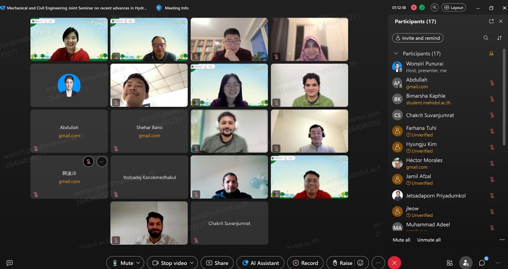
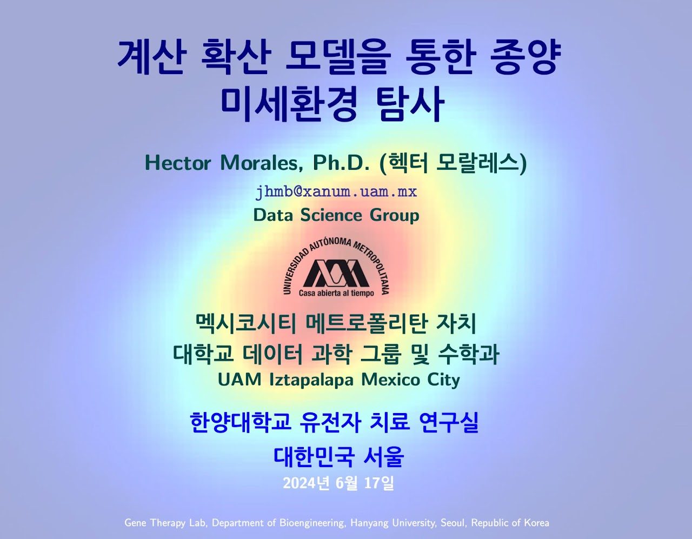
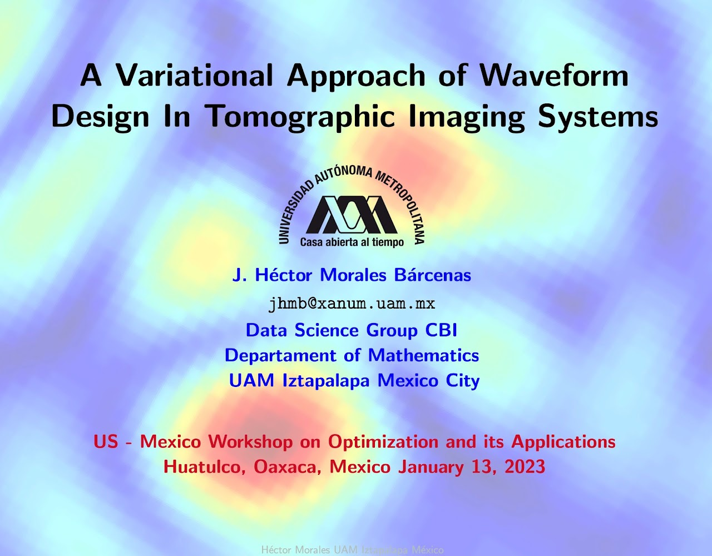
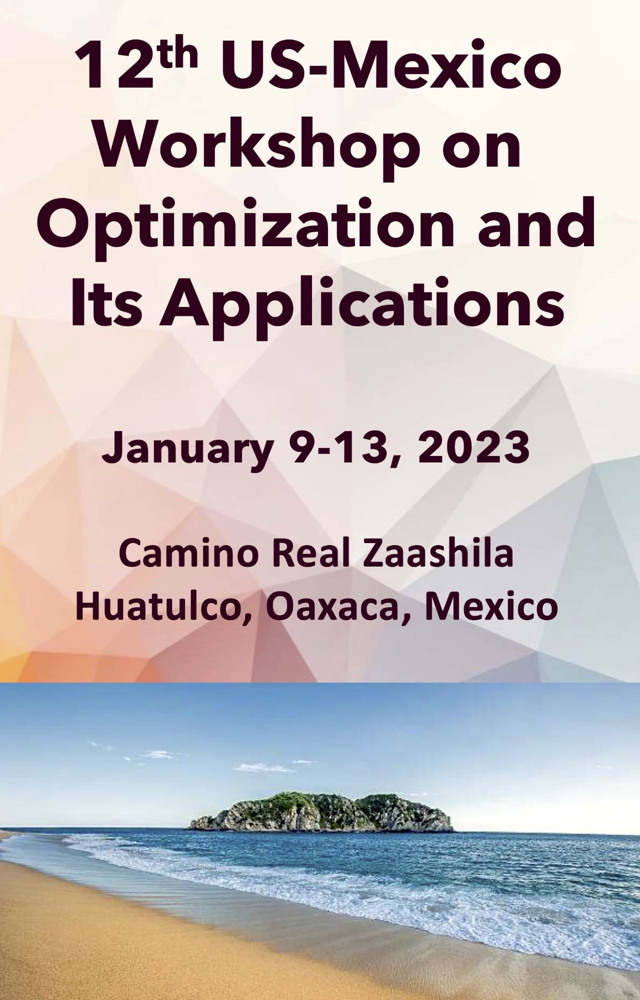
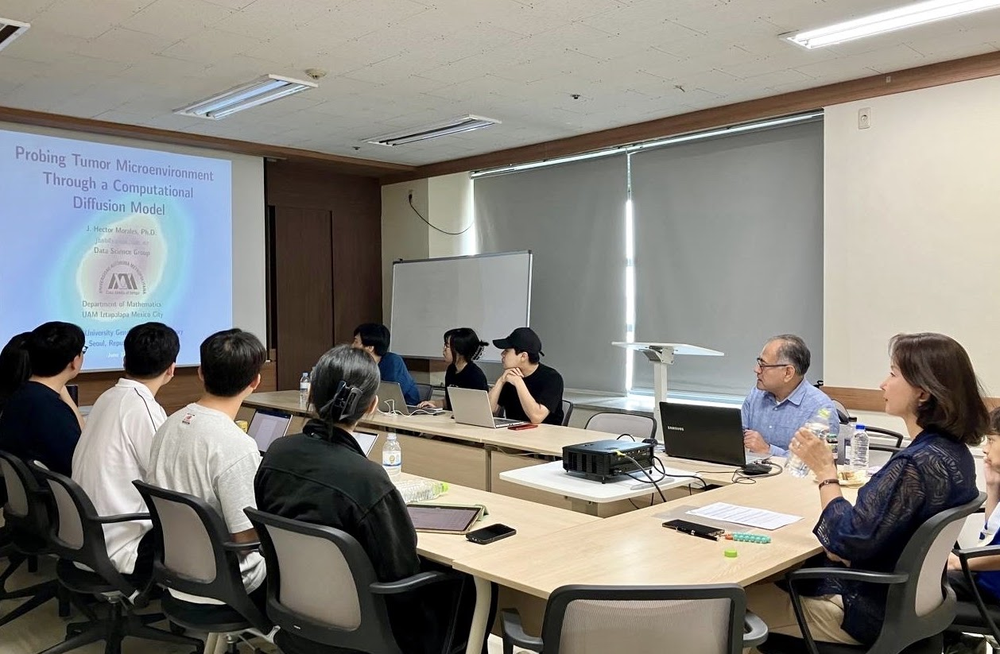
Professor of Mathematics at the Universidad Autónoma Metropolitana (UAM), Mexico City, Mexico.
Problèmes inverses, propagation des ondes, imagerie médicale, tomographie et modélisation mathématique en biologie.
“Models are tools, not oracles.”
“I would use the data from the experiments to adjust my constants and check whether I was on the right track.”
“Anytime you try to teach the subjects without teachers who love the subject, it is doomed to failure and is a foolish thing to do.”
“When a new particle or new fact is discovered, I notice that all the theorists do one of two things: they either form a group or disperse.”
Ultimately, mathematical modeling must explain real experiments; otherwise, it's useless.
“If it disagrees with experiment, it’s wrong. In that simple statement is the key to science. It doesn’t make any difference how beautiful your guess is, it doesn’t matter how smart you are who made the guess, or what his name is … If it disagrees with experiment, it’s wrong. That’s all there is to it.”
In Praise of Calculus…
“Plans for the education of future mathematicians must be based on a shrewd notion about the future development of mathematics. To glimpse the future, we must look at the current state of mathematics as well as the trends in it and in the sciences and technologies contiguous with mathematics.”
The Julia programming language is a flexible dynamic language, appropriate for scientific and numerical computing, with performance comparable to traditional statically-typed languages.
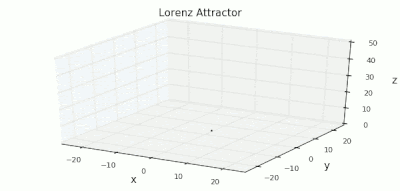
Python.org — Scientific computing, statistical learning, and data analysis.
Stan — Probabilistic programming for Bayesian inference.




In this talk, we analyze the problem of optimal waveform design for imaging systems through a dispersive medium. We use a scalar model for wave propagation, together with the single-scattering approximation, and we assume that measurements are polluted with thermal noise whose statistics are known. For image formation, we use a filtered back-projection algorithm in which the filter is determined by knowledge of the power spectral densities of the scene and noise. In this framework, we derive an optimal waveform by minimizing the mean-square error of the reconstructed image. We show the simulation results for imaging point scatterers embedded in a specific dispersive background. We show that for low signal-to-noise ratios, the optimal waveform resembles what is known as a precursor: a wave generated from propagating ultrawideband waveforms through the medium.
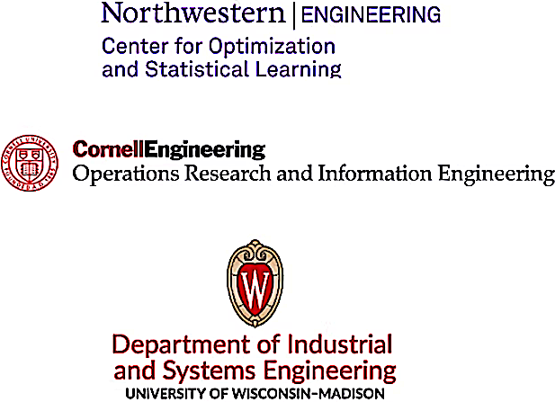
The 12th US–Mexico Workshop on Optimization and its Applications also held a special dinner celebrating Stephen Wright’s (belated) 60th birthday.
Organizers:
All local organization and registration was done by Eunae Jo, Northwestern University.
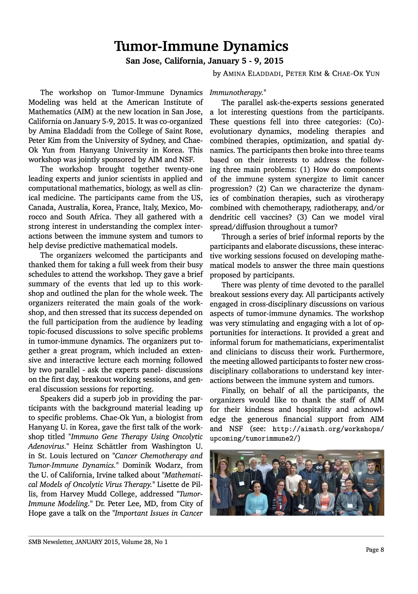
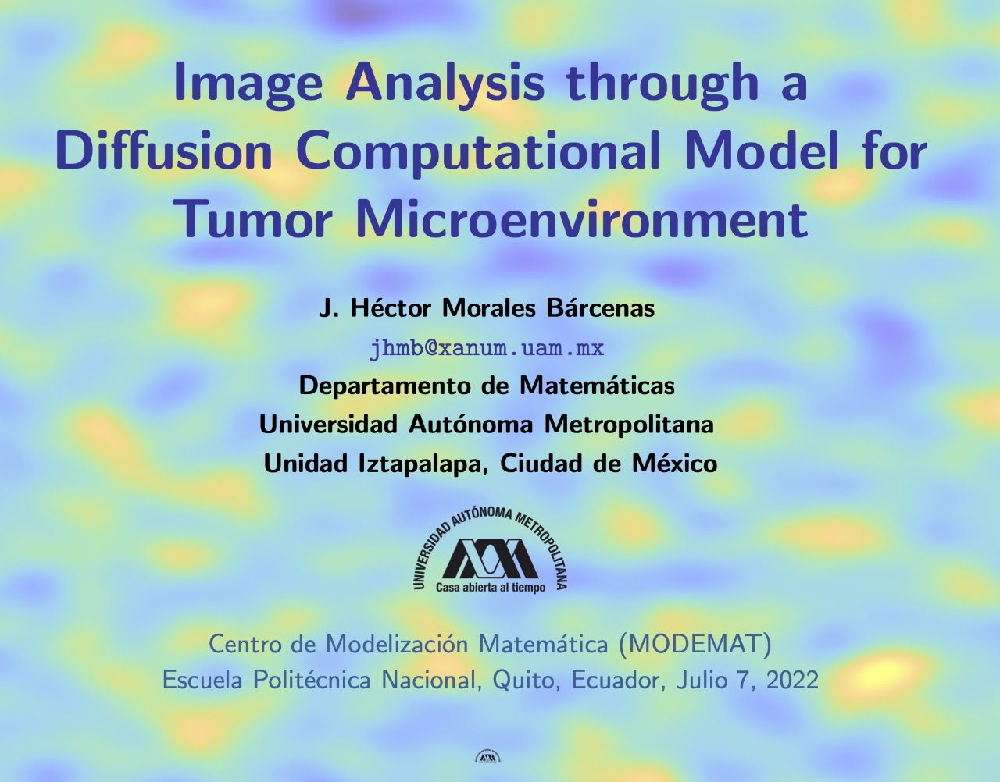
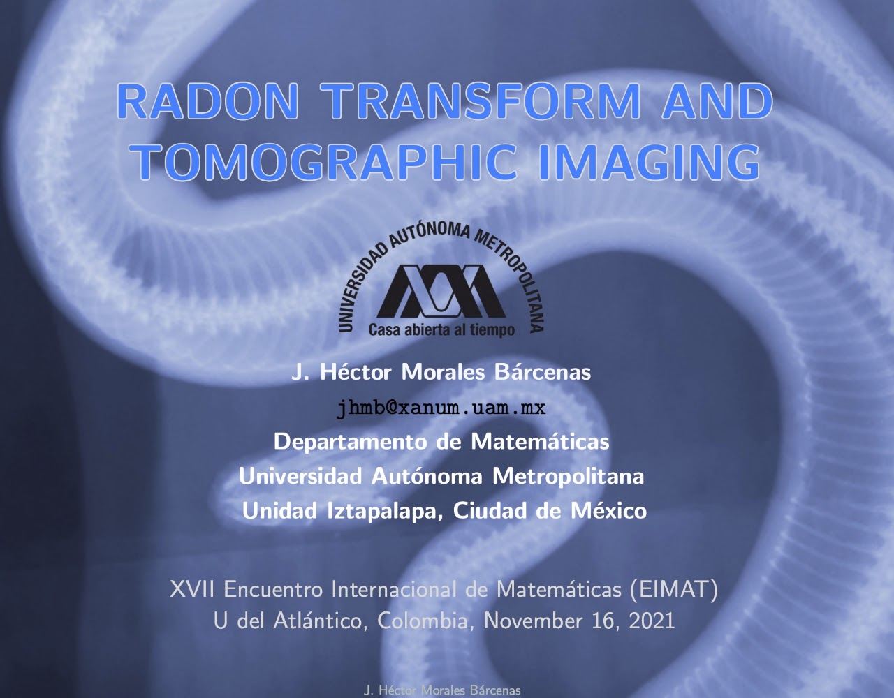
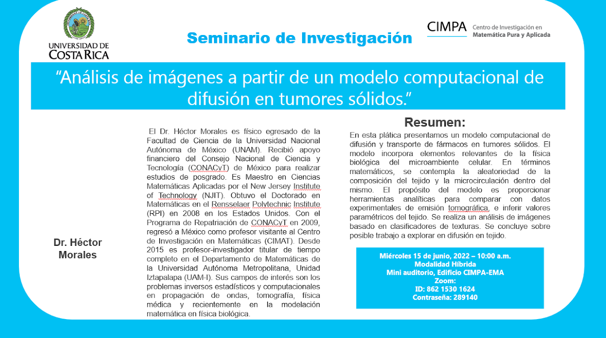
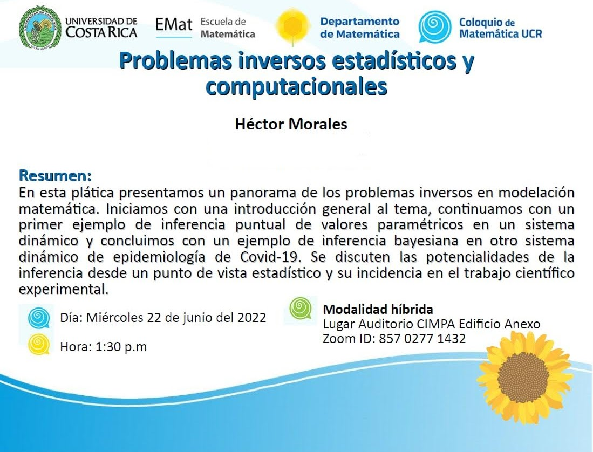
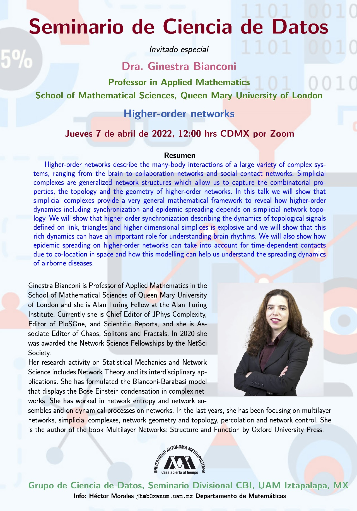
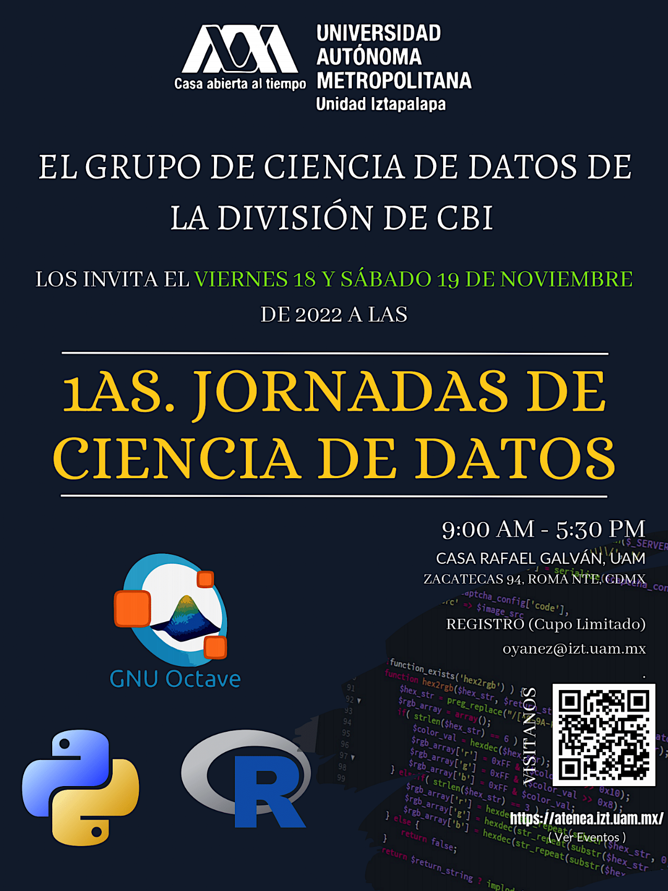
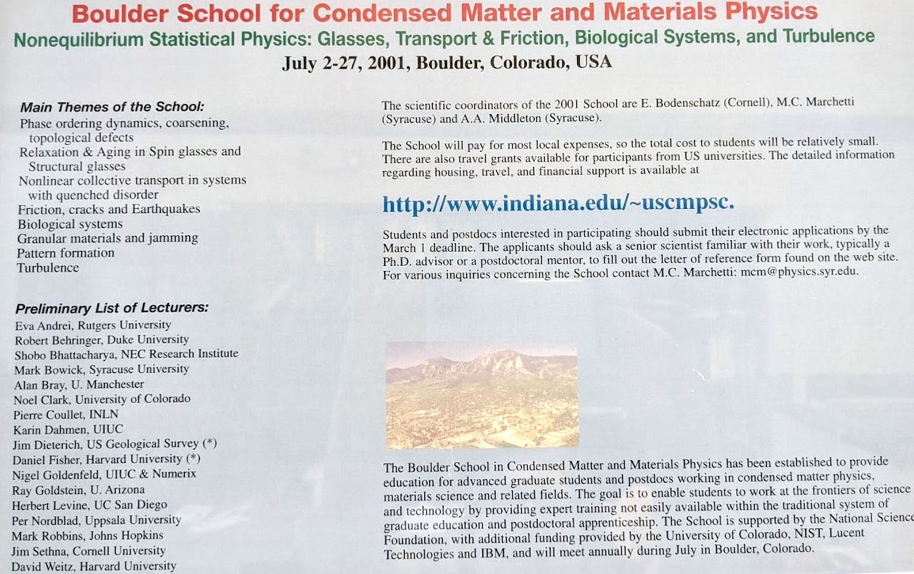
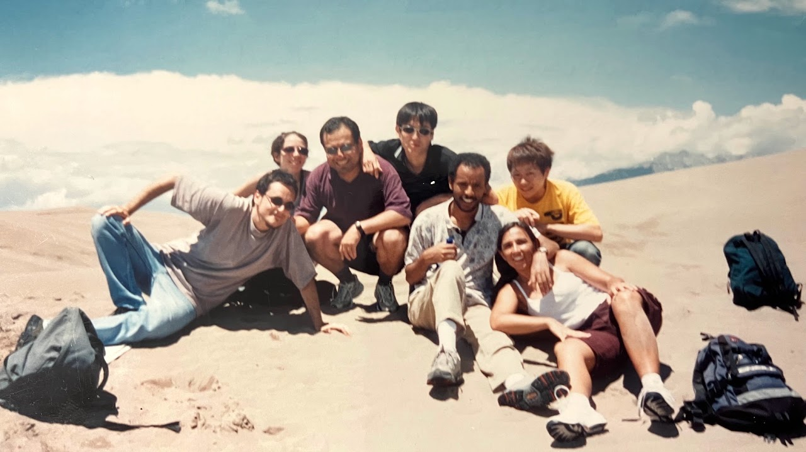